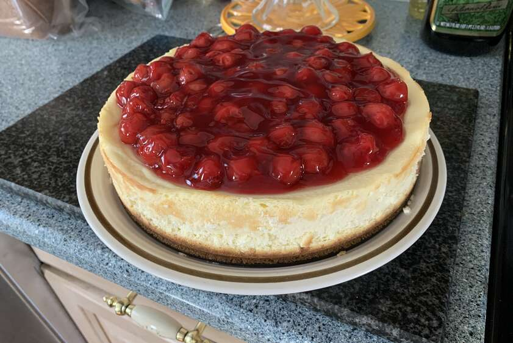

New York Cheesecake

Recipe Description
New York Cheesecakes have three layers, starting with a Graham Cracker Crust. Next, is a deliciously rich, and tangy sweet, cream cheese filling that has a wonderfully dense and creamy smooth texture. The top layer is lightly sweetened sour cream. This cheesecake is very good on its own, or you can serve it with fresh berries or a fruit sauce.
Ingredients
- 2 pounds cream cheese
- ¾ cup white sugar
- 2 eggs
- 1 teaspoon vanilla extract
- 2 tablespoons cornstarch
- 1 cup sour cream
- 1 ½ cups graham cracker crumbs
- 6 tablespoons melted butter
- ¼ cup white sugar
Steps
- Preheat oven to 400 degrees F (205 degrees C).
- Mix graham cracker crumbs, melted butter, and 1/4 cup sugar together. Press mixture onto the bottom of one 9 or 10 inch springform pan. Place in freezer for 10 minutes.
- Mix 3/4 cup of the sugar and cream cheese until smooth. Beat in eggs, vanilla, and cornstarch until just mixed. Stir in sour cream until blended. Pour into prepared crust.
- Bake at 400 degrees F (205 degrees C) for 45 minutes. Turn oven off and leave cake in oven with the door ajar for 3 hours. Serve with your favorite topping. Enjoy!